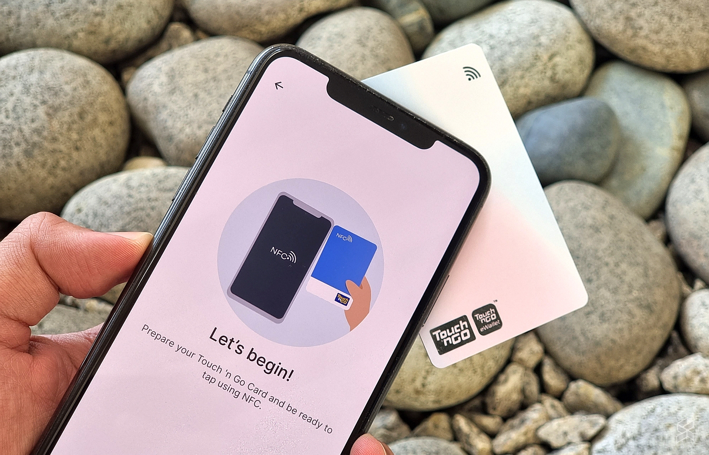
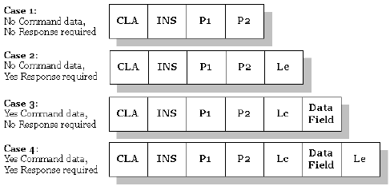
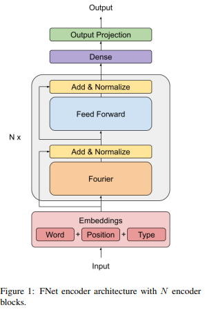
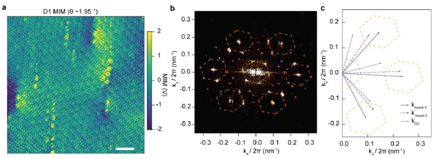

From Theoretical Physics to AI
My journey in the tech industry: Experience sharing and Advices
1. Master Student at INSPEM (2010-2012)

- Explored the geometry of two-qubit quantum states using complex and quaternionic Hopf bundles and their local coordinates, metrics and transition functions.
- Studied how different degrees of entanglement affect the linear independence and flatness of the base space coordinates.
R&D Engineer at i-Serve (2019-2020)
- 1) IoT: NFC Functionalities

R&D Engineer at i-Serve (2019-2020)
- 2) NFC Card APDU (application protocol data unit) Sender and Receiver

R&D Engineer at i-Serve (2019-2020)
- 3) Visual QR Code
R&D Engineer at i-Serve (2019-2020)
4) eKYC product
- Database design
- Statistical testing of model
- Image classification using ML
Advantages of Research Background Applied to Tech(specific to general)
A. Cross-domain Technical knowledge
- Knowledge in physics & math is applicable to many fields, including: - Fourier transform / wavelets transform(image preprocessing, large language model)

